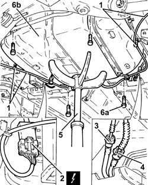
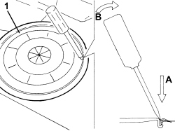
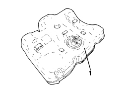

1040A10 FUEL TANK - R + R AND DECANT FUEL
- Path
- Procedures > 10 ENGINE > 1040 FUEL TANK AND PIPES > 1040A FUEL TANK AND COMPONENTS > 1040A10 FUEL TANK - R + R AND DECANT FUEL
- Kind
- repair procedure (removal / refitting; the operation number is the code)
- Applies to
- all engines; all production periods
- Interactive page
- https://sloeber94.github.io/elrnDB-fCrm/en/#/194000286
Applies to: engines: 1.8, 2.2; all production periods
 Removing
Removing
 Refitting
Refitting- Position the vehicle on a lift.
- Make sure that the ignition key is in the OFF position, then disconnect the battery terminal (-).
Description | Connector | |
|---|---|---|
- | Battery |
Op. 4450B08 RIGHT REAR WHEEL - R.R
Op. 7055B45 RIGHT REAR WHEEL ARCH LINER - R.R
Op. 1040A30 FUEL FILLER PIPE ASSEMBLY- R + R
Op. 1076B20 REAR EXHAUST SILENCER - R + R
Op. 1076B30 FRONT EXHAUST SILENCER - R + R
1. Release the handbrake control cables from the intermediate fastenings.
2. Disconnect the intermediate electrical connection for the electrical wiring for the submerged fuel pump assembly complete with fuel gauge.
Description | Connector | |
|---|---|---|
2 | Fuel pump and level gauge |
3. Disconnect the rapid connector for the rear fuel supply pipe, intermediate fuel supply pipe side.
4. Disconnect the rapid connector for the fuel vapour pipe.
5. Position a hydraulic jack with a suitable tool for supporting the fuel tank.
6. Undo the bolts (6a), lower the hydraulic jack and remove the fuel tank assembly (6b).

Applies to: engines: 1.8, 2.2; all production periods
Refitting
Removing- Place the fuel tank assembly in its housing using the hydraulic jack and secure it tightening the bolts to the recommended torque.
Component | Fastening | dia | Value (daNm) | Validity |
|---|---|---|---|---|
Fuel tank | Bolt | M8 | (bodyshell side) 3.2 - 3.9 |
- Remove the hydraulic jack with the suitable tool for supporting the fuel tank.
- Connect the rapid connector for the fuel vapour pipe.
- Connect the rapid connector for the rear fuel supply pipe, intermediate fuel supply pipe side.
- Connect the intermediate electrical connection for the electrical wiring for the submerged fuel pump assembly complete with fuel gauge.
- Secure the handbrake control cables to the intermediate fastenings.
Op. 1076B30 FRONT EXHAUST SILENCER - R + R
Op. 1076B20 REAR EXHAUST SILENCER - R + R
Op. 1040A30 FUEL FILLER PIPE ASSEMBLY- R + R
Op. 7055B45 RIGHT REAR WHEEL ARCH LINER - R.R
Op. 4450B08 RIGHT REAR WHEEL - R.R
- Connect the negative battery terminal.
- Remove the vehicle from the lift.
Applies to: engines: 1.9 JTD 8v, 1.9 JTD 16v, 2.4 JTD 20v; all production periods
Removing
Refitting- Position the vehicle on a lift.
- Make sure that the ignition key is in the OFF position, then disconnect the battery terminal (-).
Description | Connector | |
|---|---|---|
- | Battery |
Applies to: engines: 1.9 JTD 8v, 1.9 JTD 16v, 2.4 JTD 20v; all production periods
1. Use tool to release and remove the access cover to the fuel pump assembly.

Applies to: engines: 1.9 JTD 8v, 1.9 JTD 16v, 2.4 JTD 20v; all production periods
1. Disconnect the electrical connection from the submerged pump assembly complete with level gauge.
Description | Connector | |
|---|---|---|
1 | Fuel pump and level gauge |
2. Disconnect the rapid connectors for the fuel supply and return pipes, submereged pump assembly side complete with level gauge.

Applies to: engines: 1.9 JTD 8v, 1.9 JTD 16v, 2.4 JTD 20v; all production periods
1. Disconnect the rapid connector for the breather pipe, fuel tank side.
2. Disconnect the rapid connector for the fuel filler pipe, fuel tank side.

Applies to: engines: 1.9 JTD 8v, 1.9 JTD 16v, 2.4 JTD 20v; all production periods
1. Position a hydraulic jack with a suitable support under the fuel tank.
2. Undo the bolts (2a) and remove the fuel tank support belts (2b).

Applies to: engines: 1.9 JTD 8v, 1.9 JTD 16v, 2.4 JTD 20v; all production periods
1. Lower the hydraulic jack slowly and remove the fuel tank.

Applies to: engines: 1.9 JTD 8v, 1.9 JTD 16v, 2.4 JTD 20v; all production periods
Refitting
Removing- Place the fuel tank back in its housing using the hydraulic jack.
- Place the fuel tank support belts back in their housings and secure them tightening the bolts to the recommended torque.
Component | Fastening | dia | Value (daNm) | Validity |
|---|---|---|---|---|
Fuel tank | Bolt | M8 | (bodyshell side) 3.2 - 3.9 |
- Remove the hydraulic jack with a suitable support under the fuel tank.
- Connect the rapid connector for the fuel filler pipe, fuel tank side.
- Connect the rapid connector for the breather pipe, fuel tank side.
- Connect the rapid connectors for the fuel supply and return pipes, submereged pump assembly side complete with level gauge.
- Connect the electrical connection to the submerged pump assembly complete with level gauge.
- Place the access cover to the submerged pump assembly complete with level gauge back in its housing and secure it using the bolts.
Op. 7050A20 ONE-PIECE REAR SEAT CUSHION - R.R.
- Connect the negative battery terminal.
- Remove the vehicle from the lift.
Topics linked from this page (8)
- 1040A30 FUEL FILLER PIPE ASSEMBLY- R + R
- 1076B20 REAR EXHAUST SILENCER - R + R
- 1076B30 FRONT EXHAUST SILENCER - R + R
- 4450B08 RIGHT REAR WHEEL - R.R
- 7050A20 ONE-PIECE REAR SEAT CUSHION - R.R.
- 7055B45 RIGHT REAR WHEEL ARCH LINER - R.R
- A001 BATTERY
- N040 FUEL PUMP AND LEVEL GAUGE